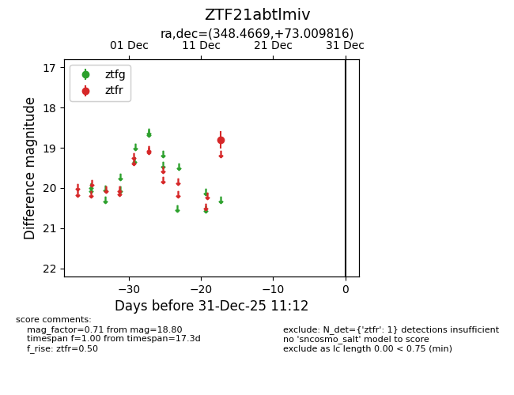
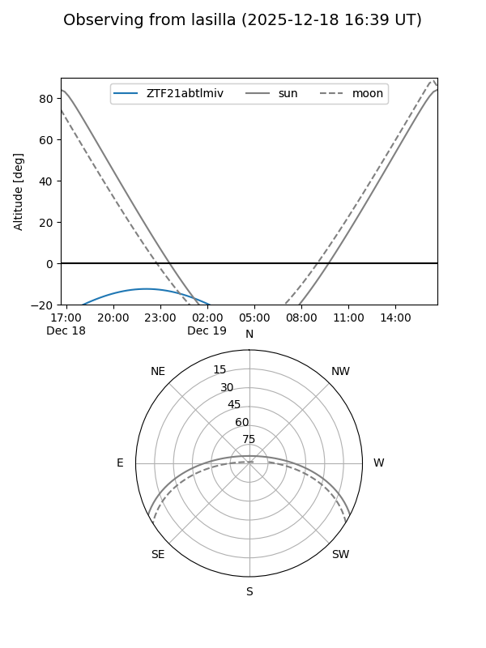
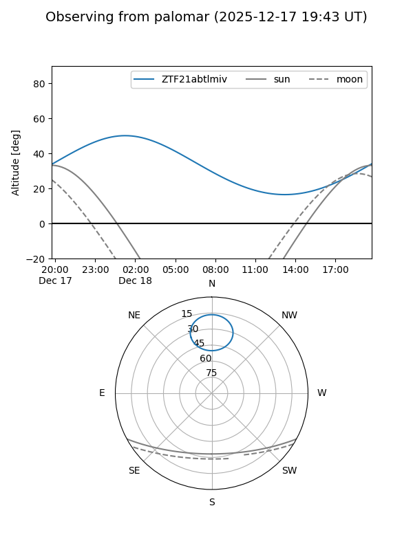

ZTF21abtlmiv
Target ZTF21abtlmiv at 2025-12-31 18:00
Aliases and brokers:
FINK: link
Lasair: link
ALeRCE: link
alt names
ZTF21abtlmiv (ztf,fink_ztf)
Coordinates:
equatorial (ra, dec) = 348.4669,+73.00982
equatorial (HMS+DMS) = 23:13:52.07,+73:00:35.34
galactic (l, b) = (115.8582,+11.49220)
Flags:
Photometry:
last ztfr=18.80
1 ztfr detections
Lightcurve

Visibility


Additional plots